Seminar paper - updated July 2026
The Heston Model
Theory, Simulation and Calibration
Introduction and Objective
The Heston model is a stochastic volatility model. The basic idea is therefore that volatility is not constant, but fluctuates randomly itself. We consider the dynamics under the risk-neutral measure \[\begin{align} dS_t &= rS_t\,dt + \sqrt{V_t}S_t\,dW_t^S, \\ dV_t &= \kappa(\theta - V_t)\,dt + \xi\sqrt{V_t}\,dW_t^V, \end{align}\] where the two Brownian motions satisfy \(\langle W^S,W^V\rangle_t=\rho t\). The process \(S_t\) describes the stock price and \(V_t\) the random variance.
The model is mainly interesting because it can represent smile and skew effects which do not occur in the Black–Scholes model with constant volatility . At the same time, however, a mathematical problem appears: the variance equation contains \(\sqrt{V_t}\). This function is not globally Lipschitz at \(0\). Therefore one cannot simply cite only the standard theory for Lipschitz SDEs, but has to look more carefully at the CIR process.
In this paper we follow four questions:
First: Is the variance process mathematically well defined and does it stay non-negative?
Then: Which discretization can be used for this process in a reasonable way?
After that: What does the concrete implementation in the project look like?
And finally: How well do calibration and tests work on the SPY data?
Model Framework and Parameter Interpretation
The parameters of the Heston model are \[(\kappa,\theta,\xi,\rho,v_0).\] Here \(\kappa\) is the speed at which the variance moves back towards its long-run level. This long-run level is \(\theta\). The parameter \(\xi\) measures how strongly the variance itself fluctuates. The correlation \(\rho\) connects the price shock and the variance shock. Finally, \(v_0\) is the initial value of the variance.
In the program code these restrictions are not only assumed theoretically, but are also checked explicitly. Thus one must have \(\kappa,\theta,\xi>0\), \(\rho\in(-1,1)\) and \(v_0\ge 0\). This is meant to prevent the optimizer from trying parameters which no longer describe a meaningful Heston model.
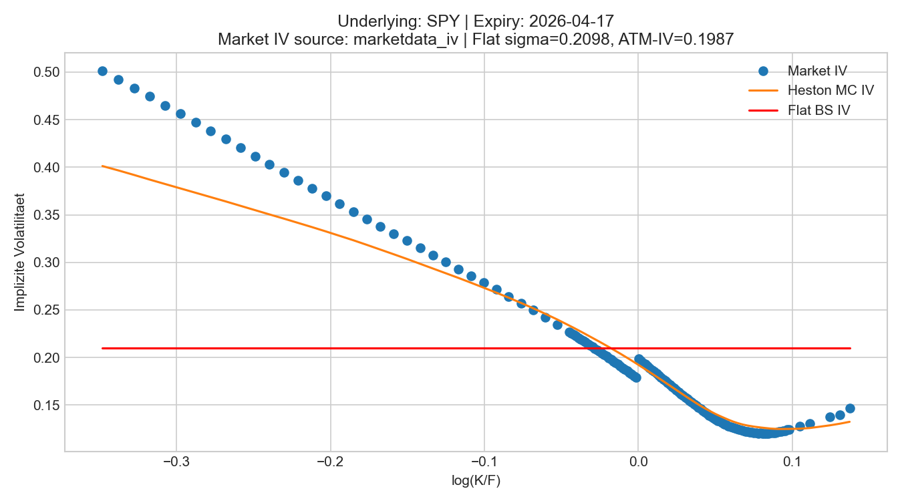
Mathematical Properties of the Variance Process (CIR)
Before we use the simulation of the Heston model, we first have to understand the variance process. This process is a CIR process and has the form \[dV_t = \kappa(\theta - V_t)dt + \xi\sqrt{V_t}\,dW_t,\qquad V_0\ge 0,\quad \kappa,\theta,\xi>0.\] The problem here is not the linear drift term, but the diffusion \(\sqrt{V_t}\). At \(0\) this function is not globally Lipschitz. Therefore the classical existence and uniqueness theory for SDEs does not apply directly. For this reason we now consider squared Bessel processes. They are exactly the right tool, because the CIR process can be reduced to such a process by a deterministic transformation.
Squared Bessel Processes
Definition 1 (Squared Bessel process). A process \((X_t)_{t\ge 0}\) is called a squared Bessel process of dimension \(\delta\ge 0\), shortly \(\mathrm{BESQ}(\delta)\), if it satisfies the SDE \[dX_t = \delta\,dt + 2\sqrt{X_t}\,dW_t,\qquad X_0\ge 0.\] The corresponding Bessel process is \(R_t=\sqrt{X_t}\). Formally it satisfies \[dR_t = \frac{\delta-1}{2R_t}\,dt + dW_t.\]
Theorem 2 (Existence, uniqueness and non-negativity of \(\mathrm{BESQ}(\delta)\)). For every \(\delta\ge 0\) and \(X_0\ge 0\), the equation \[dX_t=\delta dt+2\sqrt{X_t}\,dW_t\] has a unique strong solution. Moreover, \(X_t\ge 0\) for all \(t\ge 0\) almost surely.
Proof source. A complete proof can be found in Revuz–Yor, Continuous Martingales and Brownian Motion, Chapter XI, Theorem 1.1, and in Karatzas–Shreve, Brownian Motion and Stochastic Calculus, Chapter 5.5.
Theorem 3 (Boundary classification of \(\mathrm{BESQ}(\delta)\)). Let \[\tau_0:=\inf\{t\ge 0:X_t=0\}.\] Then, for \(X_0>0\), the following holds:
If \(\delta\ge 2\), then the boundary \(0\) is not reached, that is \(\mathbb P(\tau_0<\infty)=0\).
If \(0<\delta<2\), then the boundary \(0\) is reached almost surely, that is \(\mathbb P(\tau_0<\infty)=1\).
If \(\delta=0\), then \(0\) is reached and is absorbing.
Proof source. See Revuz–Yor, Chapter XI, Theorem 1.2 and the following discussion. Another presentation can be found in Jeanblanc–Yor– Chesney, Mathematical Methods for Financial Markets, Chapter 6.
Lemma 4 (Yamada–Watanabe). If weak existence and pathwise uniqueness hold for an SDE, then a unique strong solution exists.
Proof source. Yamada–Watanabe, On the uniqueness of solutions of stochastic differential equations, J. Math. Kyoto Univ. (1971); see also Karatzas–Shreve, Chapter 5.2.
Existence and Uniqueness for the CIR Process
Theorem 5 (Existence and uniqueness of the CIR process). Let \(\kappa,\theta,\xi>0\) and \(V_0\ge 0\). Then the CIR SDE \[dV_t = \kappa(\theta - V_t)dt + \xi\sqrt{V_t}\,dW_t\] has a unique strong solution. In addition, \(V_t\ge 0\) for all \(t\ge 0\) almost surely.
Proof. We want to reduce the CIR process to a squared Bessel process. For this purpose we set \[\delta := \frac{4\kappa\theta}{\xi^2},\qquad c:=\frac{\xi^2}{4\kappa},\qquad \varphi(t):=c(e^{\kappa t}-1).\] The function \(\varphi\) is deterministic and strictly increasing, because \[\varphi'(t)=\frac{\xi^2}{4}e^{\kappa t}>0.\]
Now let \(X\) be a \(\mathrm{BESQ}(\delta)\) process with initial value \(X_0=V_0\). We define \[V_t:=e^{-\kappa t}X_{\varphi(t)}.\] We now show that this \(V_t\) satisfies the CIR equation. By Ito’s formula and the deterministic time-change rule, \[dX_{\varphi(t)} = \delta\,\varphi'(t)dt+2\sqrt{X_{\varphi(t)}}\,dW_{\varphi(t)}.\] Therefore \[dV_t = -\kappa V_t\,dt +e^{-\kappa t}\Big(\delta\,\varphi'(t)dt +2\sqrt{X_{\varphi(t)}}\,dW_{\varphi(t)}\Big).\]
Now we only have to normalize the stochastic term correctly. We set \[M_t:=W_{\varphi(t)}\] and consider the filtration \(\mathcal G_t:=\mathcal F_{\varphi(t)}\). For \(0\le s\le t\), \[\mathbb E[M_t\mid \mathcal G_s] =\mathbb E[W_{\varphi(t)}\mid \mathcal F_{\varphi(s)}] =W_{\varphi(s)}=M_s.\] Thus \(M\) is a continuous martingale. We now define \[B_t:=\int_0^t e^{-\kappa s/2}\,dM_s.\] Then \[\langle B\rangle_t =\int_0^t e^{-\kappa s}\varphi'(s)ds =\frac{\xi^2}{4}t.\] By Levy’s characterization, \[\widetilde W_t:=\frac{2}{\xi}B_t\] is a Brownian motion. Moreover, \[\sqrt{X_{\varphi(t)}}=e^{\kappa t/2}\sqrt{V_t}.\] Inserting this into the equation for \(dV_t\) gives \[dV_t = -\kappa V_t\,dt +\frac{\delta\xi^2}{4}dt +\xi\sqrt{V_t}\,d\widetilde W_t.\] Since \[\frac{\delta\xi^2}{4} = \frac{4\kappa\theta}{\xi^2}\cdot \frac{\xi^2}{4} =\kappa\theta,\] we obtain \[dV_t=\kappa(\theta-V_t)dt+\xi\sqrt{V_t}\,d\widetilde W_t.\] Thus we have constructed a weak solution.
It remains to prove uniqueness. Let \(V^1\) and \(V^2\) be two solutions driven by the same Brownian motion. We show that both become BESQ processes after the inverse transformation. For this we define \[Y_t^i:=e^{\kappa t}V_t^i,\qquad X_u^i:=Y_{t(u)}^i,\qquad t(u):=\frac{1}{\kappa}\log\!\Big(1+\frac{4\kappa u}{\xi^2}\Big).\] By the product rule, \[dY_t^i =\kappa\theta e^{\kappa t}dt +\xi e^{\kappa t/2}\sqrt{Y_t^i}\,dW_t.\] The time-change rule gives \[dW_{t(u)}=\sqrt{t'(u)}\,d\widehat W_u, \qquad t'(u)=\frac{4}{\xi^2}e^{-\kappa t(u)}.\] Therefore \[\begin{aligned} dX_u^i &=\kappa\theta e^{\kappa t(u)}t'(u)\,du +\xi e^{\kappa t(u)/2}\sqrt{X_u^i}\,dW_{t(u)}\\ &=\frac{4\kappa\theta}{\xi^2}\,du +2\sqrt{X_u^i}\,d\widehat W_u\\ &=\delta\,du+2\sqrt{X_u^i}\,d\widehat W_u. \end{aligned}\] Thus \(X^1\) and \(X^2\) solve the same \(\mathrm{BESQ}(\delta)\) SDE with the same initial value and the same Brownian motion. By pathwise uniqueness for BESQ we get \[X^1\equiv X^2.\] Transforming back gives \[V^1\equiv V^2.\] Together with Yamada–Watanabe this yields strong existence and strong uniqueness.
Finally, non-negativity follows as well. Indeed, \[V_t=e^{-\kappa t}X_{\varphi(t)},\] where \(e^{-\kappa t}>0\) and \(X_{\varphi(t)}\ge 0\). Hence \(V_t\ge 0\) for all \(t\ge 0\) almost surely. ◻
Feller Condition for the CIR Process
Theorem 6 (Feller condition for CIR). Let \(V\) be the CIR process and let \(V_0>0\). Then:
If \(2\kappa\theta\ge \xi^2\), then \(\mathbb P(\inf_{t>0}V_t>0)=1\).
If \(2\kappa\theta<\xi^2\), then \(V\) reaches the boundary \(0\) almost surely, but remains non-negative.
Proof. From the previous proof we know that \[V_t=e^{-\kappa t}X_{\varphi(t)}\] with \(X\sim\mathrm{BESQ}(\delta)\) and \[\delta=\frac{4\kappa\theta}{\xi^2}.\] Since \(e^{-\kappa t}>0\), for every \(t\ge 0\) one has \[V_t=0 \iff X_{\varphi(t)}=0.\] If we set \[\tau_0^V:=\inf\{t\ge 0:V_t=0\},\qquad \tau_0^X:=\inf\{u\ge 0:X_u=0\},\] then the strict monotonicity of \(\varphi\) gives \[\tau_0^V=\varphi^{-1}(\tau_0^X).\] So \(V\) reaches the boundary \(0\) exactly when the corresponding BESQ process reaches the boundary \(0\).
Now we use the boundary classification of the BESQ process. If \[\delta\ge 2,\] then \(0\) is not reached. This condition is equivalent to \[\frac{4\kappa\theta}{\xi^2}\ge 2 \iff 2\kappa\theta\ge \xi^2.\] If, on the other hand, \(0<\delta<2\), that is \[0<2\kappa\theta<\xi^2,\] then the boundary \(0\) is reached almost surely. This proves exactly the Feller condition. ◻
Remark 7 (Intuition for the Feller condition). The condition \[2\kappa\theta\ge \xi^2\] means intuitively that the pull back towards the long-run level is strong enough to keep the random fluctuations of the variance away from the boundary \(0\). If this condition is violated, then the fluctuations are relatively strong. In this case the process can hit the boundary \(0\). Non-negativity, however, is not lost.
Numerical Methods and Convergence
Discretization: Full-Truncation Euler and Log-Euler
After the variance process has been considered mathematically, it has to be discretized for the simulation. In the project the Full-Truncation Euler scheme is used for \(V_t\). For the price \(S_t\), however, not \(S_t\) itself is updated directly, but \(\log(S_t)\). The central code excerpt is shown in Listing [lst:fte_scheme].
def fte_variance_step(
v: np.ndarray,
kappa: float,
theta: float,
xi: float,
dt: float,
z_v: np.ndarray,
) -> np.ndarray:
"""
Ein Schritt des Full-Truncation-Euler-Schemas fuer die Varianz.
Formel (PDF Kapitel 4.2):
v_{n+1} = v_n + kappa (theta - v_n^+) dt + xi * sqrt(v_n^+) * sqrt(dt) * z_v
wobei v_n^+ = max(v_n, 0) komponentenweise.
"""
v_pos = np.maximum(v, 0.0)
return v + kappa * (theta - v_pos) * dt + xi * np.sqrt(v_pos) * math.sqrt(dt) * z_v
def log_euler_price_step(
log_s: np.ndarray,
v_pos: np.ndarray,
r: float,
dt: float,
z_s: np.ndarray,
) -> np.ndarray:
"""
Log-Euler-Update fuer den Aktienpreis.
Formel (PDF Kapitel 4.2):
log S_{n+1} = log S_n + (r - 0.5 * v_n^+) dt + sqrt(v_n^+ * dt) * z_s
Diese Form sichert S_{n+1} > 0 und ist numerisch stabiler als ein
direktes Euler-Update auf S.
"""
return log_s + (r - 0.5 * v_pos) * dt + np.sqrt(v_pos * dt) * z_sThe idea behind Full Truncation is simple: if a negative variance value would occur in one step, then this negative value is not used for drift and diffusion. Instead one uses \[V_n^+=\max(V_n,0).\] Thus the square-root term is always well defined. For the price, the log update ensures that after transforming back one always has \(S_t>0\).
Monte Carlo Convergence
Theorem 8 (Monte Carlo Rate). Let \(Y\in L^2\) and \(\widehat{\mu}_N:=\frac{1}{N}\sum_{i=1}^N Y_i\) with i.i.d. copies \(Y_i\). Then \[\mathbb E\big[|\widehat{\mu}_N-\mu|^2\big]=\frac{\mathrm{Var}(Y)}{N},\qquad \sqrt{N}(\widehat{\mu}_N-\mu)\Rightarrow\mathcal N(0,\mathrm{Var}(Y)).\] In particular, the statistical error is of order \(N^{-1/2}\).
Source. Standard result of Monte Carlo theory, see .
We therefore expect that the Monte Carlo error behaves approximately like \(1/\sqrt{N}\). This is exactly what validation test E7 checks. There the estimated slope is \(-0.5098\), which is very close to the theoretical value \(-0.5\). Thus we see that the statistical part of the simulation has the expected behaviour.
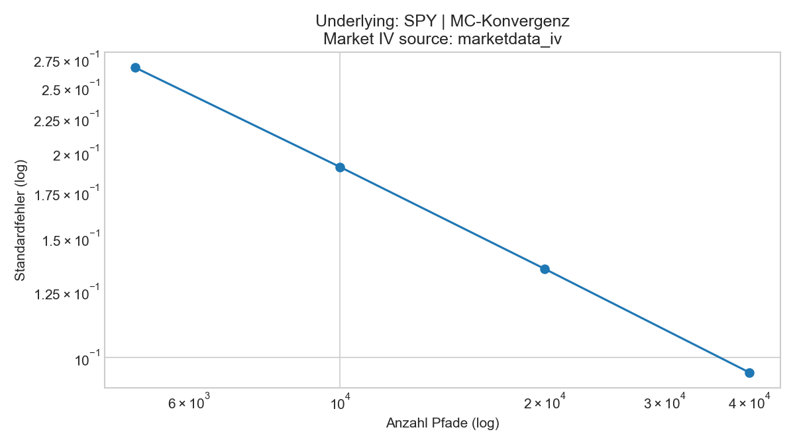
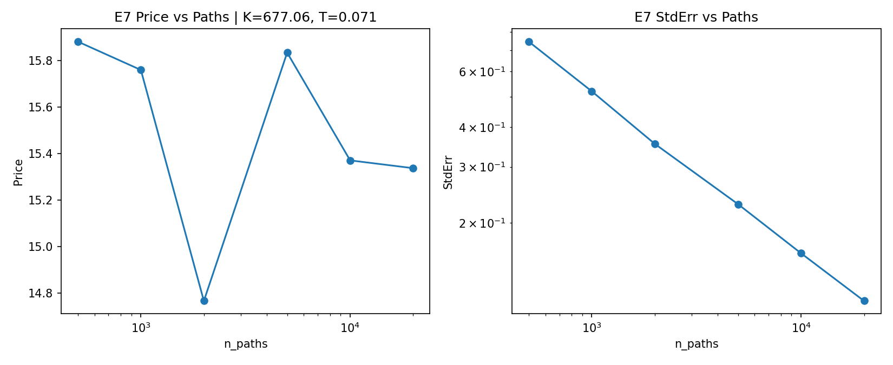
Time-Step Error and SDE Discretization
Theorem 9 (Euler–Maruyama under a global Lipschitz assumption). For an SDE with globally Lipschitz continuous drift and diffusion, Euler–Maruyama has strong order \(1/2\) and weak order \(1\): \[\sup_{0\le n\le N}\Big(\mathbb E|X_{t_n}-\bar X_n|^2\Big)^{1/2}=\mathcal O(\Delta t^{1/2}), \qquad |\mathbb E[f(X_T)]-\mathbb E[f(\bar X_N)]|=\mathcal O(\Delta t).\]
Source. .
For the Heston or CIR process, the assumption of global Lipschitz continuity is not satisfied. Therefore Full Truncation is important. In the project, test E8 shows that the convergence with respect to the step size is still stable. The maximum relative deviation from the finest grid is \(0.03498\) and is therefore below the chosen tolerance \(0.07\).
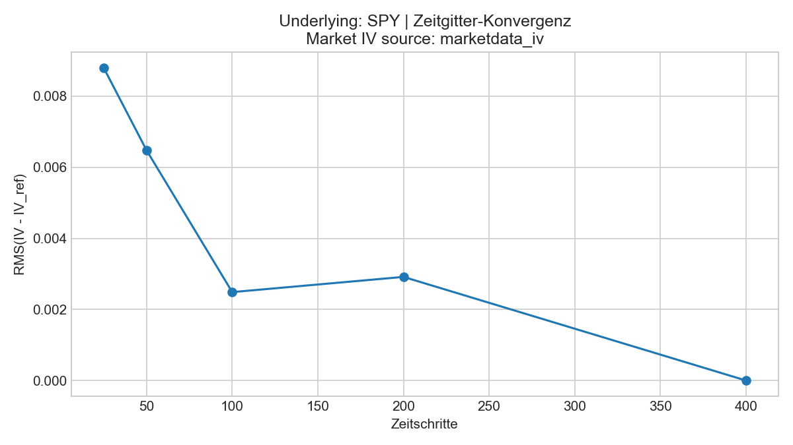
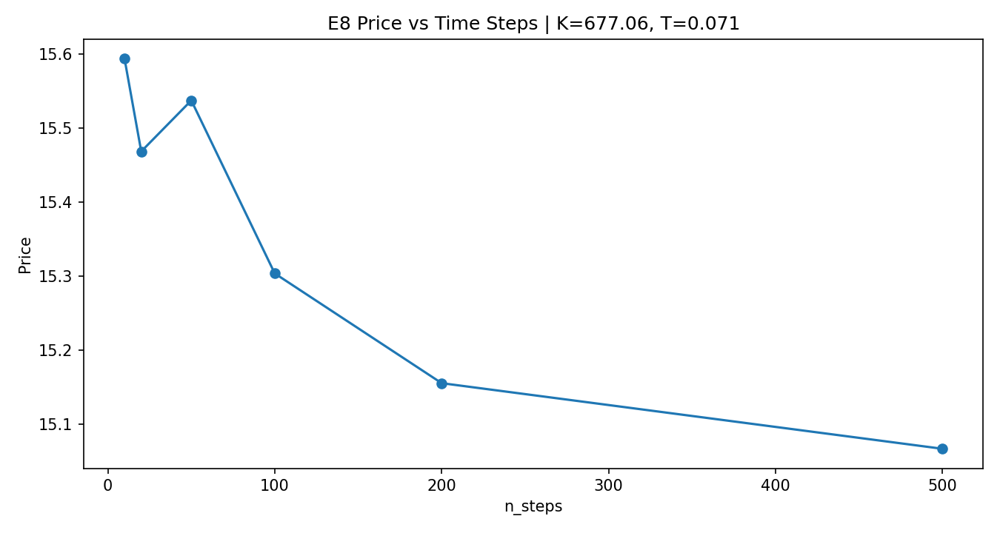
Simulation with Diagnostics and Martingale Correction
Now we consider the actual simulation loop. Besides the update of \(S_t\) and \(V_t\), diagnostics are also collected there. For example, the program counts negative raw values of the variance, NaN or Inf values and zero plateaus. In addition, moment matching can be used. This ensures that the empirical discounted mean of the simulated prices is closer to the theoretical martingale behaviour.
for j in range(n_steps):
# Pre-Truncation-Check: negative Varianzwerte vor dem Abschneiden
neg_pre_trunc_count += int(np.sum(v < 0.0))
v_prev_pos = np.maximum(v, 0.0)
near_zero_count += int(np.sum(v_prev_pos < v_near_zero_threshold))
total_checks += v_prev_pos.size
# Zufaellige Inkremente
if use_precomputed:
z_v_step = z_v[:, j]
z_perp_step = z_perp[:, j]
else:
z_v_step = rng.standard_normal(n_paths)
z_perp_step = rng.standard_normal(n_paths)
z_s_step = params.rho * z_v_step + math.sqrt(1.0 - params.rho ** 2) * z_perp_step
# Varianz-Update: erst rohes FTE, dann Positivitaetsprojektion.
# Die Projektion eliminiert negative Endwerte in finalen Outputs.
v_raw = fte_variance_step(
v=v,
kappa=params.kappa,
theta=params.theta,
xi=params.xi,
dt=dt,
z_v=z_v_step,
)
neg_after_fte_raw_count += int(np.sum(v_raw < 0.0))
v_next = np.maximum(v_raw, 0.0)
neg_post_projection_count += int(np.sum(v_next < 0.0))
# Effektive Schrittvarianz im Asset-Update:
# deterministic midpoint nur aus dem Driftterm von v.
# Wichtig: keine direkte Nutzung des stochastischen v_{n+1}, da dies
# bei korrelierten Schocks einen Drift-Bias verursachen kann.
v_eff = np.maximum(
v_prev_pos + 0.5 * params.kappa * (params.theta - v_prev_pos) * dt,
0.0,
)
s_prev = np.exp(log_s)
log_s = log_euler_price_step(
log_s=log_s,
v_pos=v_eff,
r=r,
dt=dt,
z_s=z_s_step,
)
s_new = np.exp(log_s)
if martingale_correction:
# Moment-Matching im Mittel: reduziert Finite-Sample-Drift des
# diskontierten Mittelwerts, ohne Pfadordnung zu veraendern.
target_mean = float(np.mean(s_prev) * math.exp(r * dt))
observed_mean = float(np.mean(s_new))
if np.isfinite(target_mean) and np.isfinite(observed_mean) and observed_mean > 0.0:
corr = target_mean / observed_mean
s_new = s_new * corr
log_s = np.log(np.maximum(s_new, 1e-300))
corr_abs = abs(float(corr) - 1.0)
martingale_corr_abs_sum += corr_abs
martingale_corr_max_abs = max(martingale_corr_max_abs, corr_abs)
# dS-Diagnostik zur Detektion von Path-Freezing / Masking-Artefakten.
ds = s_new - s_prev
exact_mask = ds == 0.0
near_mask = np.abs(ds) <= float(asset_increment_near_zero_eps)
exact_zero_increment_count += int(np.sum(exact_mask))
near_zero_increment_count += int(np.sum(near_mask))
plateau_run = np.where(exact_mask, plateau_run + 1, 0).astype(np.int32)
plateau_max = np.maximum(plateau_max, plateau_run)
# Zustand fortschreiben
v = v_next
# Diagnostik: Min/Max, NaN/Inf
v_min = float(min(v_min, float(np.min(v))))
v_max = float(max(v_max, float(np.max(v))))
nan_count += int(np.sum(np.isnan(v))) + int(np.sum(np.isnan(log_s)))
inf_count += int(np.sum(np.isinf(v))) + int(np.sum(np.isinf(log_s)))
if return_paths:
s_paths[:, j + 1] = s_new
if return_variance_paths:
v_paths[:, j + 1] = v
s_t = np.exp(log_s)
v_t = v
n_increments = float(max(n_paths * n_steps, 1))
diagnostics = {
"neg_pre_trunc_count": float(neg_pre_trunc_count),
"neg_after_fte_raw_count": float(neg_after_fte_raw_count),
"neg_post_projection_count": float(neg_post_projection_count),
"v_min": float(v_min),
"v_max": float(v_max),
"v_near_zero_fraction": float(near_zero_count) / float(total_checks) if total_checks > 0 else 0.0,
"exact_zero_increment_fraction": float(exact_zero_increment_count) / n_increments,
"near_zero_increment_fraction": float(near_zero_increment_count) / n_increments,
"max_exact_zero_plateau_len": float(int(np.max(plateau_max)) if plateau_max.size > 0 else 0),
"paths_with_exact_zero_plateau_ge_2": float(np.sum(plateau_max >= 2)),
"martingale_correction_mean_abs": float(martingale_corr_abs_sum / float(max(n_steps, 1))),
"martingale_correction_max_abs": float(martingale_corr_max_abs),
"nan_count": float(nan_count),Implementation: Data, Calibration and Pricing
Command-Line Workflow
The implementation is controlled by four commands. First,
load-data loads the option data and cleans them.
After that, calibrate calibrates the parameters.
With make-plots the figures are generated and with
validate the validation is carried out. The parser
definition is shown in Listing [lst:cli_parser].
write_json(out_log, log)
# Parameter separat speichern
out_params = _outputs_dir() / "calibrated_params.json"
write_json(out_params, {
"kappa": best_params.kappa,
"theta": best_params.theta,
"xi": best_params.xi,
"rho": best_params.rho,
"v0": best_params.v0,
})
print(f"Gespeichert: {out_log}")
print(f"Gespeichert: {out_params}")
def make_plots_cmd(args: argparse.Namespace) -> None:
"""
Erstellt alle geforderten Plots in outputs/figures.
"""
if args.ticker != "SPY":
raise ValueError("Es ist ausschliesslich der Ticker SPY erlaubt.")
input_csv = _outputs_dir() / "cleaned_spy_options.csv"
if not input_csv.exists():
raise FileNotFoundError("cleaned_spy_options.csv fehlt. Bitte zuerst load-data ausfuehren.")
params_file = _outputs_dir() / "calibrated_params.json"
if not params_file.exists():
raise FileNotFoundError("calibrated_params.json fehlt. Bitte zuerst calibrate ausfuehren.")
cleaned = pd.read_csv(input_csv)
with params_file.open("r", encoding="utf-8") as f:
p = json.load(f)
params = HestonParams(
kappa=p["kappa"],
theta=p["theta"],
xi=p["xi"],
rho=p["rho"],
v0=p["v0"],
)
calibration_selected_expiries: List[str] = []
cal_log = _outputs_dir() / "calibration_log.json"
if cal_log.exists():
try:
with cal_log.open("r", encoding="utf-8") as f:
log_payload = json.load(f)
selected = log_payload.get("expiries_selected", [])
if isinstance(selected, list):
calibration_selected_expiries = [str(x) for x in selected if x is not None]
except Exception:
calibration_selected_expiries = []
if args.expiry:
expiry = args.expiry[0]
else:
expiry = None
if calibration_selected_expiries:
expiry = calibration_selected_expiries[0]
# Sekundaerer Fallback: medianes days_to_expiry.
if not expiry:
cleaned["days_to_expiry"] = pd.to_numeric(cleaned["days_to_expiry"], errors="coerce")
summary = cleaned.groupby("expiry").agg(avg_days=("days_to_expiry", "mean")).reset_index()
summary = summary.sort_values(by="avg_days")
expiry = str(summary.iloc[len(summary) // 2]["expiry"])
results = make_all_plots(
cleaned=cleaned,
params=params,
expiry=expiry,
output_dir=_figures_dir(),
iv_source_mode=args.iv_source,
n_paths_final=args.n_paths_final,
steps_per_year=args.steps_per_year,
seed=args.seed,
strike_for_pathplot=args.strike_for_pathplot,
calibration_expiries=calibration_selected_expiries,
)
for k, v in results.items():
print(f"{k}: {v}")Calibration Function and Weights
In the calibration we look for parameters such that the implied volatilities produced by the model are as close as possible to the market IVs. Thus the objective function is a weighted error in IV space. In particular, the wings of the smile can be weighted more strongly, because this is exactly where the difference between Black–Scholes and Heston becomes visible.
def _compute_weights(df: pd.DataFrame, mode: str, spread_eps: float) -> np.ndarray:
"""
Gewichte fuer die Kalibrierung im IV-Raum.
- mode="spread": inverse relativer Spread (mit Clipping)
- mode="spread_moneyness": spread-Gewichte plus Moneyness-Balancierung
- mode="uniform": 1
"""
if mode == "uniform":
return np.ones(len(df), dtype=float)
spread = pd.to_numeric(df.get("spread"), errors="coerce")
mid = pd.to_numeric(df.get("mid"), errors="coerce")
rel_spread = spread / np.maximum(mid.abs(), spread_eps)
rel_spread = rel_spread.replace([np.inf, -np.inf], np.nan).fillna(1.0)
base_weights = 1.0 / np.maximum(rel_spread.to_numpy(dtype=float), spread_eps)
base_weights = np.clip(base_weights, 0.2, 25.0)
if mode == "spread":
weights = base_weights
weights = weights / max(float(np.mean(weights)), 1e-12)
return weights
if mode != "spread_moneyness":
raise ValueError(f"Unbekannter weights_mode: {mode}")
# Moneyness-Multiplikator: Fluegel (grosses |log(K/F)|) etwas staerker gewichten.
K = pd.to_numeric(df.get("K"), errors="coerce").to_numpy(dtype=float)
S0 = pd.to_numeric(df.get("S0"), errors="coerce").to_numpy(dtype=float)
r = pd.to_numeric(df.get("r"), errors="coerce").to_numpy(dtype=float)
T = pd.to_numeric(df.get("T"), errors="coerce").to_numpy(dtype=float)
F = np.maximum(S0 * np.exp(r * T), 1e-12)
abs_log_m = np.abs(np.log(np.maximum(K, 1e-12) / F))
scale = max(float(np.nanpercentile(abs_log_m, 90)), 1e-6)
wing_boost = 1.0 + 0.8 * (abs_log_m / scale)
wing_boost = np.clip(wing_boost, 1.0, 2.6)
# Dichte-Balancierung je Expiry: unterbesetzte Moneyness-Bereiche aufwerten.
density_boost = np.ones(len(df), dtype=float)
log_m_series = pd.Series(np.log(np.maximum(K, 1e-12) / F), index=df.index)
for expiry, grp in df.groupby("expiry", sort=False):
idx = grp.index
lm = log_m_series.loc[idx]
lm = lm.replace([np.inf, -np.inf], np.nan).dropna()
if lm.empty:
continue
n_bins = int(min(10, max(4, round(math.sqrt(len(lm))))))
lo = float(lm.min())
hi = float(lm.max())
if not np.isfinite(lo) or not np.isfinite(hi) or abs(hi - lo) < 1e-12:
continue
edges = np.linspace(lo, hi, n_bins + 1)
bin_ids = np.digitize(lm.to_numpy(dtype=float), edges[1:-1], right=False)
counts = np.bincount(bin_ids, minlength=n_bins)
positive = counts[counts > 0]
if positive.size == 0:
continue
target = float(np.median(positive))
local = target / np.maximum(counts[bin_ids].astype(float), 1.0)
local = np.clip(local, 0.6, 2.0)
density_boost[df.index.get_indexer(lm.index)] = local
weights = base_weights * wing_boost * density_boost
weights = np.clip(weights, 0.2, 40.0)
weights = weights / max(float(np.mean(weights)), 1e-12) def objective_for_dataset(
params: HestonParams,
dataset: pd.DataFrame,
dataset_weights: pd.Series,
n_paths: int,
z_cache_local: Dict[str, Tuple[np.ndarray, np.ndarray]],
) -> float:
total = 0.0
for expiry in expiries:
df_exp = dataset[dataset["expiry"] == expiry]
if df_exp.empty:
continue
n_steps = n_steps_map[expiry]
# Simuliere mit CRN
result = compute_model_iv_for_expiry(
params=params,
df_expiry=df_exp,
n_paths=n_paths,
n_steps=n_steps,
seed=config.seed,
use_precomputed=True,
z_cache=z_cache_local[expiry],
)
model_iv = result["model_iv"]
market_iv = df_exp["iv_market"].to_numpy(dtype=float)
w = dataset_weights.loc[df_exp.index].to_numpy(dtype=float)
# Fehler berechnen; NaNs mit hohem Penalty
diff = model_iv - market_iv
diff = np.where(np.isfinite(diff), diff, 5.0)
total += float(np.sum(w * diff ** 2))
return total
def objective(x: np.ndarray) -> float:
params = HestonParams.from_array(x)
try:
params.validate()
except Exception:
return 1e6
return objective_for_dataset(
params=params,
dataset=df_opt,
dataset_weights=weights_opt,
n_paths=config.n_paths,
z_cache_local=z_cache_opt, res = minimize(
objective,
x_start,
method="L-BFGS-B",
bounds=bounds,
options=min_opts if min_opts else None,
)
full_obj = float(res.fun)
if subsampling_active:
try:
params_eval = HestonParams.from_array(res.x)
params_eval.validate()
full_obj = objective_for_dataset(
params=params_eval,
dataset=df_full,
dataset_weights=weights_full,
n_paths=n_paths_select,
z_cache_local=z_cache_select,
)
except Exception:
full_obj = 1e12
selection_obj = float(full_obj if subsampling_active else res.fun)
selection_weighted_rmse = math.sqrt(max(selection_obj, 0.0) / selection_weight_sum)
opt_weighted_rmse = math.sqrt(max(float(res.fun), 0.0) / opt_weight_sum)
full_weighted_rmse = math.sqrt(max(float(full_obj), 0.0) / full_weight_sum)
prev_best_obj = best_selection_obj
relative_improvement = 0.0
improved = selection_obj < best_selection_obj
meaningful_improvement = False
if improved:
if np.isfinite(prev_best_obj):
relative_improvement = (prev_best_obj - selection_obj) / max(abs(prev_best_obj), 1e-12)
else:
relative_improvement = float("inf")
meaningful_improvement = (not np.isfinite(relative_improvement)) or (relative_improvement >= config.min_relative_improvement)
if improved:
best_selection_obj = float(selection_obj)
best_obj_opt = float(res.fun)
best_obj_full = float(full_obj)
best_x = res.x
stagnation_count = 0 if meaningful_improvement else (stagnation_count + 1)
else:
stagnation_count += 1
all_runs.append({
"restart": i,
"success": bool(res.success),
"fun": float(res.fun),
"fun_full": float(full_obj),
"selection_fun": float(selection_obj),
"weighted_rmse_subsample": float(opt_weighted_rmse),
"weighted_rmse_full": float(full_weighted_rmse),
"weighted_rmse_selection": float(selection_weighted_rmse),
"relative_improvement_vs_prev_best": float(relative_improvement if np.isfinite(relative_improvement) else -1.0),
"meaningful_improvement": bool(meaningful_improvement),
"x": res.x.tolist(),
"message": str(res.message),
"nit": int(getattr(res, "nit", 0)),
"nfev": int(getattr(res, "nfev", 0)),
})
if bool(res.success):
successful_runs.append({
"fun": float(res.fun),
"fun_full": float(full_obj),
"selection_fun": float(selection_obj),
"selection_weighted_rmse": float(selection_weighted_rmse),
"x": res.x,
})
best_weighted_rmse = math.sqrt(max(best_selection_obj, 0.0) / selection_weight_sum)
if n_restarts_executed >= int(config.min_restarts_before_stop):
if config.target_weighted_rmse is not None and best_weighted_rmse <= float(config.target_weighted_rmse):
early_stop_reason = (
f"target_weighted_rmse_reached: best={best_weighted_rmse:.6f}, "
f"target={float(config.target_weighted_rmse):.6f}"
)
break
if config.early_stop_patience > 0 and stagnation_count >= int(config.early_stop_patience):
early_stop_reason = (
"stagnation: "
f"{stagnation_count} restarts ohne signifikante Verbesserung "
f"(min_relative_improvement={config.min_relative_improvement:.4f})"
)
breakIV Inversion
To compare market prices and model prices, both are transformed into implied volatilities. For this purpose the Black–Scholes formula is inverted numerically. Before that, the program checks whether the price lies within the no-arbitrage bounds. This filters out implausible or numerically problematic values.
def implied_vol_from_price(
price: float,
S0: float,
K: float,
T: float,
r: float,
option_type: str,
vol_lower: float = 1e-6,
vol_upper: float = 5.0,
) -> ImpliedVolResult:
"""
Invertiert einen Black-Scholes-Preis auf implizite Volatilitaet.
Die Funktion prueft zuerst No-Arbitrage-Grenzen. Liegt der Preis ausserhalb
der Bounds, wird status="arbitrage_violation" gesetzt.
"""
# Eingabepfad pruefen, bevor numerisch gesucht wird.
if price <= 0.0 or S0 <= 0.0 or K <= 0.0 or T <= 0.0:
return ImpliedVolResult(iv=float("nan"), status="bad_input")
# No-Arbitrage-Grenzen fuer den Preis
if option_type == "call":
lower = max(S0 - K * math.exp(-r * T), 0.0)
upper = S0
elif option_type == "put":
lower = max(K * math.exp(-r * T) - S0, 0.0)
upper = K * math.exp(-r * T)
else:
raise ValueError("option_type muss 'call' oder 'put' sein.")
if price < lower - 1e-12 or price > upper + 1e-12:
return ImpliedVolResult(iv=float("nan"), status="arbitrage_violation")
def objective(vol: float) -> float:
return bs_price(S0, K, T, r, vol, option_type) - price
try:
f_low = objective(vol_lower)
f_high = objective(vol_upper)
# Falls kein Vorzeichenwechsel, existiert kein loesbarer Root im Intervall.
if f_low * f_high > 0.0:
return ImpliedVolResult(iv=float("nan"), status="no_solution")
iv = brentq(objective, vol_lower, vol_upper, maxiter=200)
return ImpliedVolResult(iv=float(iv), status="ok")
except Exception:
return ImpliedVolResult(iv=float("nan"), status="failed")Calibration Result (SPY)
The parameters stored in
outputs/calibrated_params.json are:
lS Parameter & Value
\(\kappa\) & 1.463129
\(\theta\) & 0.066619
\(\xi\) & 1.136194
\(\rho\) & -0.853467
\(v_0\) & 0.044775
Now the Feller condition can be checked directly. For this parameter set one has \[2\kappa\theta = 0.19495 < \xi^2 = 1.29094.\] Thus the condition is not satisfied. This does not mean that the process is useless. It only means that the boundary \(0\) can be reached by the variance process. This fits the theoretical discussion from Chapter 3.

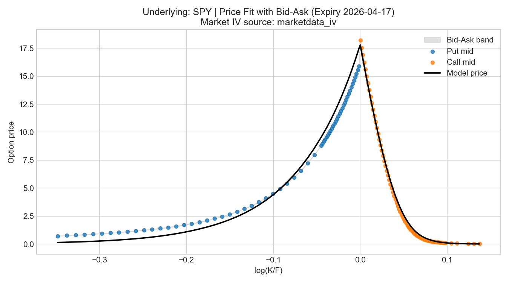
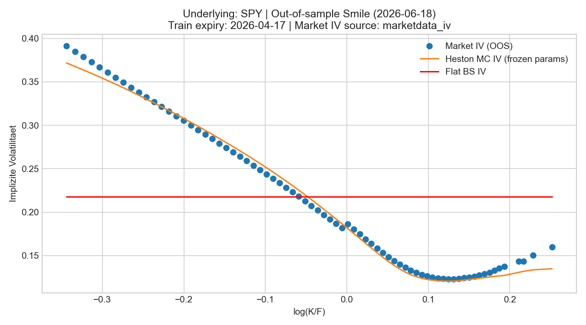
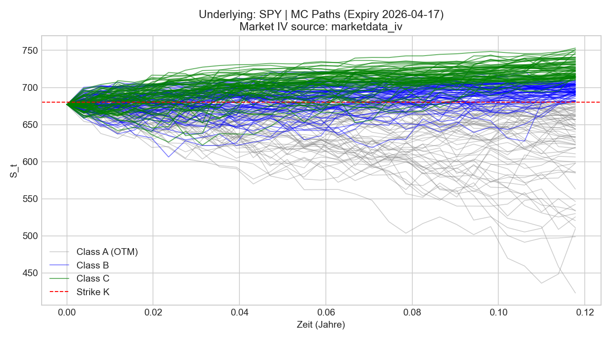
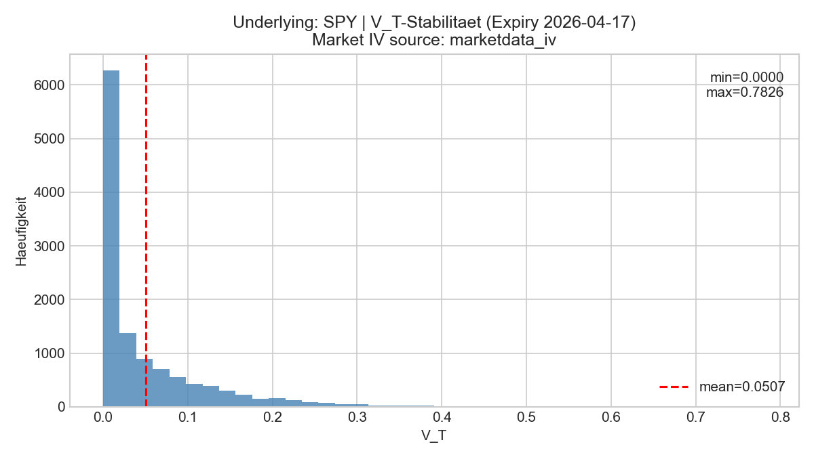
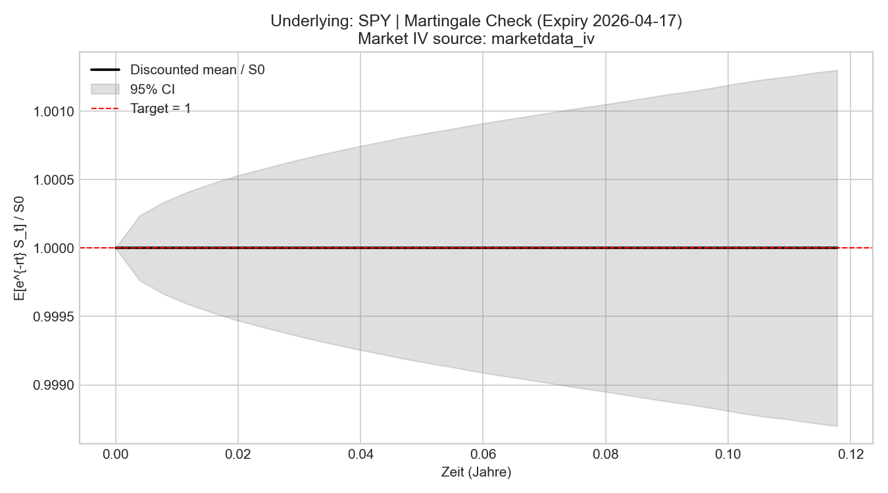
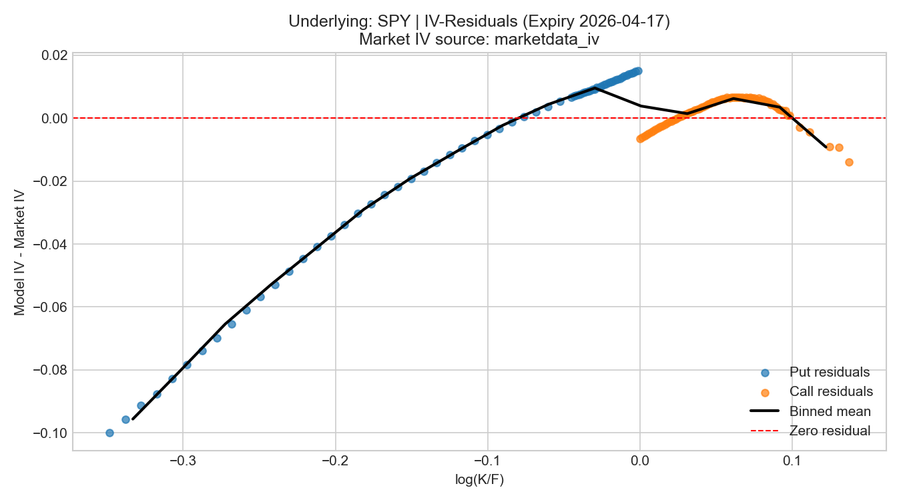
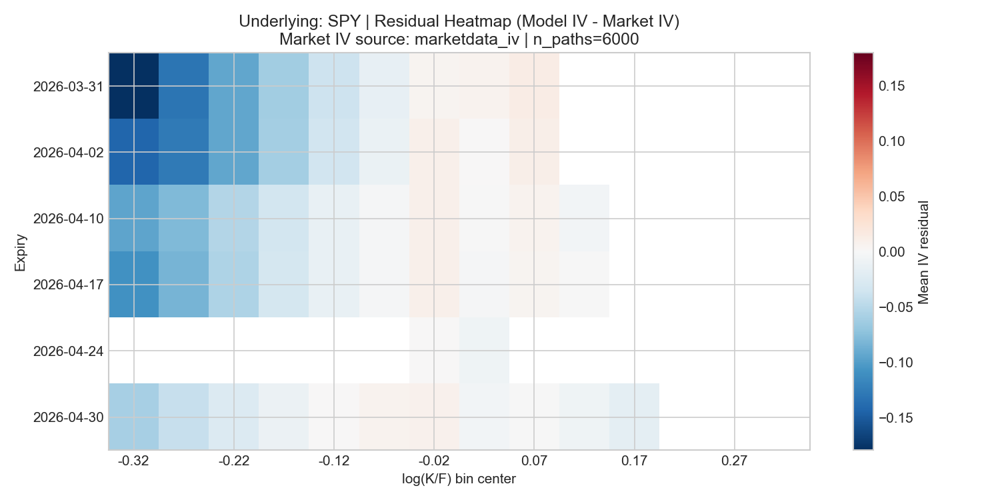
Validation and Plausibility Tests
After the parameters have been calibrated, we have to check
whether the simulation is also numerically meaningful. The test
framework in validation.py carries out several test
blocks for this purpose. Among other things, path consistency,
martingale behaviour, Brownian-increment quality, convergence,
no-arbitrage checks, special cases and reproducibility are
tested.
"""
Tests fuer Full-Truncation-Euler und Log-Preis-Update.
"""
import numpy as np
from heston_mc.models import HestonParams
from heston_mc.pricers import simulate_heston_fte
def test_fte_simulation_positive_and_finite():
params = HestonParams(kappa=1.5, theta=0.04, xi=0.3, rho=-0.5, v0=0.04)
rng = np.random.default_rng(42)
res = simulate_heston_fte(
params=params,
S0=100.0,
r=0.01,
T=1.0,
n_steps=50,
n_paths=2000,
rng=rng,
return_paths=False,
return_variance_paths=False,
)
assert np.all(np.isfinite(res.s_t))
assert np.all(res.s_t > 0.0)
assert np.all(np.isfinite(res.v_t))
assert np.all(res.v_t >= 0.0)
assert float(res.diagnostics.get("neg_post_projection_count", 0.0)) == 0.0def test_calibration_uses_full_objective_when_subsampled():
cleaned = _make_synthetic_cleaned()
config = CalibrationConfig(
n_paths=160,
n_paths_final=500,
steps_per_year=60,
seed=123,
n_restarts=1,
weights_mode="spread",
maxiter=1,
max_options_per_expiry=8,
otm_only=True,
max_abs_log_moneyness=0.35,
)
_, log = calibrate_heston(cleaned=cleaned, expiries=["2026-04-17"], config=config)
assert log["selection_metric"] == "full_objective"
assert log["best_objective"] == pytest.approx(log["best_objective_full"])
assert "best_objective_subsample" in log
assert "fun_full" in log["runs"][0]
def test_calibration_uses_standard_objective_without_subsampling():
cleaned = _make_synthetic_cleaned()
config = CalibrationConfig(
n_paths=120,
n_paths_final=300,
steps_per_year=40,
seed=7,
n_restarts=1,
weights_mode="spread",
maxiter=1,
max_options_per_expiry=None,
otm_only=True,
max_abs_log_moneyness=0.35,
)
_, log = calibrate_heston(cleaned=cleaned, expiries=["2026-04-17"], config=config)
assert log["selection_metric"] == "objective"
assert log["best_objective"] == pytest.approx(log["best_objective_subsample"])def test_validation_suite_runs_synthetic_quick():
tmp_dir = _workspace_test_tmp_dir()
cfg = ValidationConfig(
output_dir=tmp_dir / "diagnostics",
seed=12345,
steps_per_year=80,
n_paths_main=600,
n_paths_pricing=800,
n_paths_market_residual=600,
n_paths_heatmap=400,
n_paths_convergence_steps=1200,
n_paths_reference_fallback=1500,
n_paths_special_case=1200,
)
cfg.path_count_grid = (200, 400, 800)
cfg.step_count_grid = (10, 20, 50)
cfg.maturities_for_pricing = (0.1, 0.25)
cfg.strike_multipliers = (0.9, 1.0, 1.1)
cfg.max_expiries_for_heatmap = 2
try:
case = make_synthetic_validation_case(name="synthetic_test")
result = run_validation_suite(case=case, config=cfg)
summary_csv = Path(result["summary_csv"])
summary_md = Path(result["summary_md"])
assert summary_csv.exists()
assert summary_md.exists()
assert result["counts"]["total"] > 0
finally:Evaluated Test Results
(real_spy)
From validation_summary.csv we obtain 21
metrics. Of these, 20 metrics pass. Only block G11 fails
narrowly, because there \(\texttt{iv\_rmse}=0.03221\) is
measured for a tolerance of \(0.03\). Thus this is not an error
in the simulation itself, but shows that a single Heston
parameter set can only approximate the whole market smile.
| Test | Metric | Value | Result |
|---|---|---|---|
| E7_convergence_paths | slope of stderr vs paths | \(-0.5098\) | passed |
| E8_convergence_steps | max rel. diff. to finest grid | \(0.03498\) | passed |
| G10_iv_roundtrip | max absolute IV error | \(2.70\times 10^{-9}\) | passed |
| G11_residual_diagnostics | IV-RMSE | \(0.03221\) | failed |
| H12_static_no_arbitrage | fraction of violations | \(0\) | passed |
| J14_reproducibility | max absolute difference | \(0\) | passed |
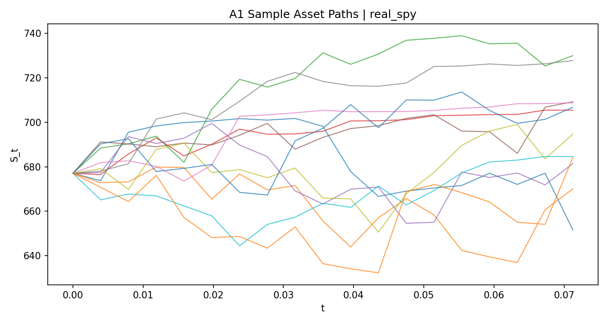
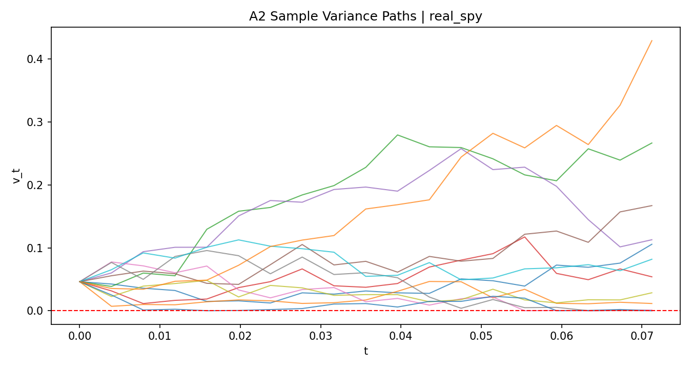
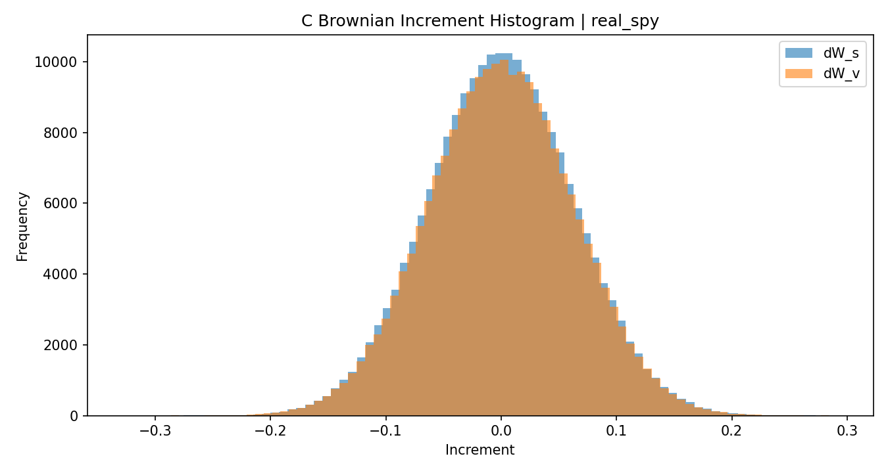
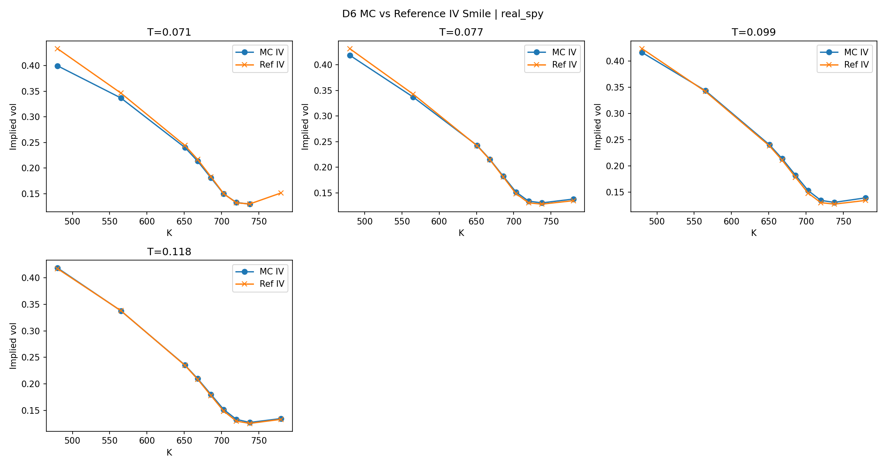
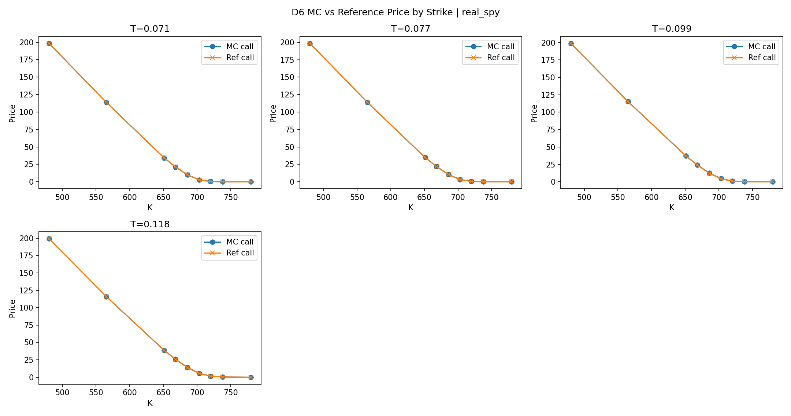
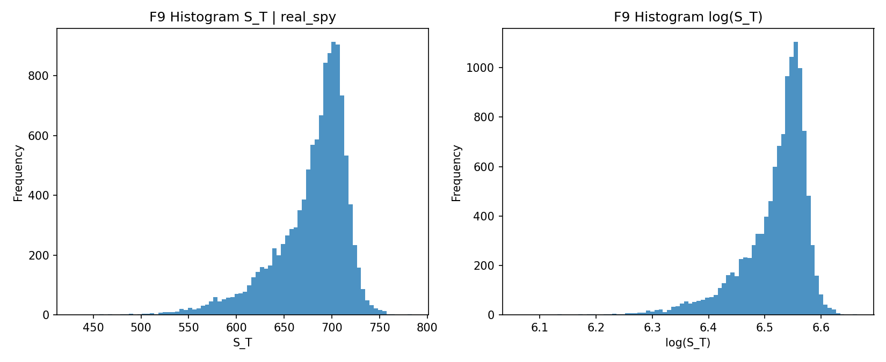
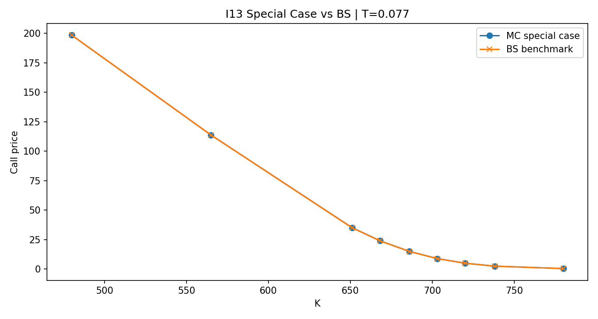
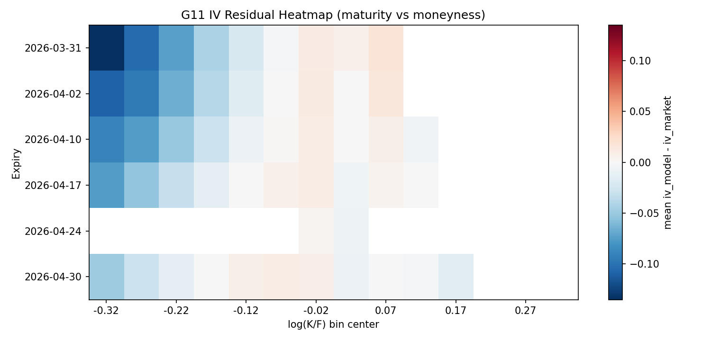
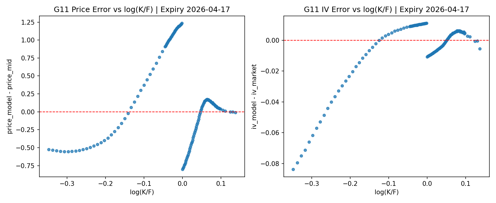
Limits of the Heston Model and Motivation for Rough Volatility
Limits of the Classical Heston Model
Now the question is why systematic residuals remain despite the calibration. The reason is not only Monte Carlo accuracy, but also the model itself. The classical Heston model has only one volatility factor and is Markovian. Empirical volatility, however, often shows strong short-term behaviour and a kind of memory which can only be captured to a limited extent by one classical factor.
Concretely, one sees three limits:
The model has only one stochastic volatility factor.
Short-term skews in market data are often steeper than in the classical Heston model.
One single global parameter set can only approximately match several maturities at the same time.
Transition to Rough Volatility
One possible extension is given by rough volatility models. There the Markovian variance dynamics are replaced by a Volterra structure: \[V_t = V_0 + \int_0^t K(t-s)\,\kappa(\theta-V_s)\,ds + \int_0^t K(t-s)\,\xi\sqrt{V_s}\,dW_s.\] For \[K(t)=\frac{t^{H-1/2}}{\Gamma(H+1/2)},\qquad H\in(0,1/2),\] a rougher volatility process is obtained . In this way one can explain exactly the error structure which remains visible in the classical Heston model, especially for short maturities.
Conclusion
We have therefore considered the Heston model from its mathematical foundation to its concrete implementation. First, the CIR process was treated using BESQ results and time-change arguments. After that, we explained why Full-Truncation Euler and Log-Euler are used for the simulation. In the implementation this leads to stable paths, plausible Monte Carlo rates and a reproducible calibration to SPY options.
The validation shows that almost all numerical tests are passed. The only remaining critical point is the IV residual test. This error is, however, interesting in terms of content: it shows that the classical Heston model can capture smile structures, but does not match the market perfectly for all maturities. This also gives the motivation for rough volatility models.
Auxiliary Results for Chapter 3
Theorem 10 (Deterministic time-change rule). Let \(W\) be a Brownian motion and let \(\tau:[0,\infty)\to[0,\infty)\) be deterministic, \(C^1\), strictly increasing and satisfy \(\tau(0)=0\). Then there exists a Brownian motion \(\widehat W\) such that, for suitable integrands \(H\), \[\int_0^t H_s\,dW_{\tau(s)} = \int_0^t H_s\sqrt{\tau'(s)}\,d\widehat W_s\] holds. In differential notation we therefore write \[dW_{\tau(s)}=\sqrt{\tau'(s)}\,d\widehat W_s.\]
Proof source. This result follows from the time change of continuous martingales, see Revuz–Yor, Continuous Martingales and Brownian Motion, Chapter V, or Karatzas–Shreve, Brownian Motion and Stochastic Calculus, Chapter 3.
Lemma 11 (Product rule for a deterministic factor). Let \(X\) be a continuous semimartingale and let \(f\in C^1([0,\infty))\) be deterministic. Then \[d(f(t)X_t)=f(t)\,dX_t+f'(t)X_t\,dt.\]
Proof source. This is the product rule as a special case of Ito’s formula, see Karatzas–Shreve, Chapter 3.
Lemma 12 (Normalization of a continuous martingale). Let \((M_t)_{t\ge 0}\) be a continuous local martingale with \[\langle M\rangle_t=ct\] for some \(c>0\). Then \[\widetilde W_t:=\frac{M_t}{\sqrt c}\] is a Brownian motion.
Proof source. This follows from Levy’s characterization or from the Dambis–Dubins–Schwarz relation, see Revuz–Yor, Chapter V.
Definition 13 (Pathwise uniqueness). An SDE has pathwise uniqueness if two solutions with the same initial value and the same Brownian motion are almost surely identical. Thus, for two such solutions \(X^1\) and \(X^2\), \[\mathbb P\big(X_t^1=X_t^2\ \text{for all }t\ge 0\big)=1.\]
Source. Yamada–Watanabe (1971), and Karatzas–Shreve, Chapter 5.2.
Further Implementation Orchestration
Finally we consider the plot orchestrator. This part of the code does not calibrate again, but takes the stored data and parameters and creates the figures from them.
def make_all_plots(
cleaned: pd.DataFrame,
params,
expiry: str,
output_dir: Path,
iv_source_mode: str,
n_paths_final: int,
steps_per_year: int,
seed: int,
strike_for_pathplot: float | None = None,
calibration_expiries: Optional[List[str]] = None,
) -> Dict[str, str]:
"""
Orchestriert die Erstellung aller geforderten Plots.
"""
output_dir.mkdir(parents=True, exist_ok=True)
df_expiry = cleaned[cleaned["expiry"] == expiry].copy()
if df_expiry.empty:
raise ValueError("Expiry fuer Plot nicht in den Daten gefunden.")
# Gleiche Datenbasis wie in der Kalibrierung (OTM-only + Moneyness-Cap),
# damit Fit-Plot und Optimierungsziel konsistent sind.
df_expiry = _canonical_plot_universe(df_expiry)
if df_expiry.empty:
raise ValueError("Nach OTM/Moneyness-Filter sind keine Plot-Daten uebrig.")
S0 = float(df_expiry["S0"].iloc[0])
r = float(df_expiry["r"].iloc[0])
T = float(df_expiry["T"].iloc[0])
n_steps = _n_steps_from_T(T, steps_per_year)
# Modell-IVs fuer Plots (groessere Pfadzahl)
result = compute_model_iv_for_expiry(
params=params,
df_expiry=df_expiry,
n_paths=n_paths_final,
n_steps=n_steps,
seed=seed,
use_precomputed=False,
)
model_iv = result["model_iv"]
# Flat-Vol-Fit und ATM-IV
sigma_flat = fit_flat_vol(df_expiry["iv_market"].to_numpy(dtype=float))
F = forward_price(S0, r, T)
atm_strike = select_strike_near_forward(df_expiry, F)
atm_iv = float(df_expiry.loc[df_expiry["K"] == atm_strike, "iv_market"].iloc[0])
iv_source_label = label_iv_source(iv_source_mode, df_expiry["iv_market_source"].unique())
# 1) Smile Overlay
smile_path = output_dir / f"smile_overlay_SPY_{expiry}.png"
plot_smile_overlay(
df_expiry=df_expiry,
model_iv=model_iv,
sigma_flat=sigma_flat,
atm_iv=atm_iv,
output_path=smile_path,
iv_source_label=iv_source_label,
)
# 2) MC Path Plot
strike = strike_for_pathplot
if strike is None:
strike = atm_strike
sim_paths = simulate_heston_fte(
params=params,
S0=S0,
r=r,
T=T,
n_steps=n_steps,
n_paths=200,
rng=np.random.default_rng(seed + 1),
return_paths=True,
return_variance_paths=False,
)
path_path = output_dir / f"mc_paths_SPY_{expiry}_K{int(round(strike))}.png"
plot_mc_paths_by_payoff_class(
s_paths=sim_paths.s_paths,
T=T,
K=float(strike),
output_path=path_path,
expiry=expiry,
iv_source_label=iv_source_label,
)
# 3) dt-Konvergenz
dt_path = output_dir / f"dt_convergence_SPY_{expiry}.png"
plot_dt_convergence(
df_expiry=df_expiry,
params=params,
steps_list=[25, 50, 100, 200, 400],
n_paths=5000,
seed=seed,
output_path=dt_path,
iv_source_label=iv_source_label,
)
# 4) MC-Konvergenz
mc_path = output_dir / f"mc_convergence_SPY_{expiry}.png"
plot_mc_convergence(
df_expiry=df_expiry,
params=params,
n_paths_list=[5000, 10000, 20000, 40000],
n_steps=n_steps,
seed=seed,
output_path=mc_path,
iv_source_label=iv_source_label,
)
# 5) Varianz-Stabilitaet
v_path = output_dir / f"v_stability_SPY_{expiry}.png"
plot_v_stability(
v_t=result["v_t"],
output_path=v_path,
expiry=expiry,
iv_source_label=iv_source_label,
)
# 6) Calibration Fit Scatter
scatter_path = output_dir / f"calibration_fit_scatter_SPY_{expiry}.png"
plot_calibration_fit_scatter(
market_iv=df_expiry["iv_market"].to_numpy(dtype=float),
model_iv=model_iv,
output_path=scatter_path,
expiry=expiry,
iv_source_label=iv_source_label,
)
# 7) IV-Residuals vs Moneyness
residual_path = output_dir / f"iv_residuals_SPY_{expiry}.png"
plot_iv_residuals_vs_moneyness(
df_expiry=df_expiry,
model_iv=model_iv,
output_path=residual_path,
expiry=expiry,
iv_source_label=iv_source_label,
)
# 8) Preisfit inkl. Bid-Ask-Band
price_fit_path = output_dir / f"price_fit_bidask_SPY_{expiry}.png"
plot_price_fit_with_bid_ask(
df_expiry=df_expiry,
model_price=result["model_price"],
output_path=price_fit_path,
expiry=expiry,
iv_source_label=iv_source_label,
)
# 9) Martingale-Check ueber Zeit
martingale_path = output_dir / f"martingale_check_SPY_{expiry}.png"
plot_martingale_check(
params=params,
S0=S0,
r=r,
T=T,
n_steps=n_steps,
n_paths=max(4000, min(12000, n_paths_final)),
seed=seed + 17,
output_path=martingale_path,
expiry=expiry,
iv_source_label=iv_source_label,
)
# 10) Residual-Heatmap ueber mehrere Expiries
heatmap_path = output_dir / "residual_heatmap_SPY.png"
plot_residual_heatmap_across_expiries(
cleaned=cleaned,
params=params,
output_path=heatmap_path,
iv_source_mode=iv_source_mode,
steps_per_year=steps_per_year,
n_paths=max(2500, min(6000, n_paths_final // 2)),
seed=seed + 41,
max_expiries=6,
)
# 11) Out-of-sample Smile-Overlay
oos_path = output_dir / f"smile_overlay_oos_SPY_{expiry}.png"
oos_expiry = plot_out_of_sample_smile_overlay(
cleaned=cleaned,
params=params,
in_sample_expiry=expiry,
output_path=oos_path,
iv_source_mode=iv_source_mode,
n_paths=max(4000, min(12000, n_paths_final)),
steps_per_year=steps_per_year,
seed=seed + 59,
calibration_expiries=calibration_expiries,
)